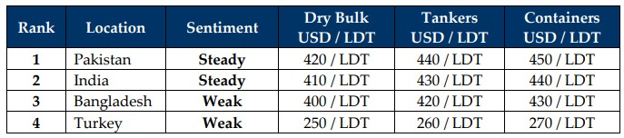

inWeekly Demolition Reports08/09/2025

Our beloved Indian sub-continent ship recycling markets continue their southward trajectory with every passing week asthe final quarter of the year gradually approaches. Ongoing currency woes (especially those recently spiraling out of control in India), tariff shocks across the sub-continent, faltering steel dynamics, suffocated offerings on the back of a now sagging demand have come together to drag sentiment decisively into terminally negative territory. At the onset, the Baltic Dry Index edged modestly higher to end the week at 1,979, up about 0.8%, as mid-sized segments remain the workhorses while Capesizes continued their melancholic sulk on the riverbank. The uptick gives a faint signal, but broader indications cement the fact demand remains fragile despite Supramax and Ultramax vessels (56–64k DWT, post-2010) continue to dominate the spotlight and firm buying interest as Greek and Chinese private buyers have reportedly been leading the charts, often pairing deals with time-charter attachments to lock in returns. Liquidity persists, albeit just not enough to change the tone. And the benchmark index overall? That declined about 2.3%.
WTI crude futures meanwhile extended ongoing losses as they fell for the 3rd week straight and settled at USD 61.9 / barrel, egged on by a replenishment of U.S. crude inventories to the tune of 2.4 million barrels, lowering expectations of demand from the U.S., which remains the largest consumer and importer of oil in the world at nearly 19% of total global demand. And in the background, geopolitical tensions continued with the U.S. pushing hard on buyers / traders of Russian oil, imposing additional levies on imports from India, where the Rupee remained tone-deaf to the plight of Alang’s ship recycling industry and recently imposed 50% tariffs collided head-on with the Indian Rupee hard as it sped its way cross the recycling lanes and into record low territories against the U.S. Dollar. And while Turkey (of course) was the only other ship recycling destination to face currency declines, Bangladesh and Pakistan otherwise had switched performances at their ends.
Ship recycling infrastructure upgrades continue at pace to HKC standards as Bangladesh boasting nearly all HKC-approved yards, but reality displayed a budding monster as the approvals confirmed the real number of domestic ship recycling yards with a pulse. A shocking decline. For the remaining yards with definitive works still underway, authorities in Chattogram and Pakistan continue to permit local deliveries in the interim, which have sadly plummeted this week with only one new arrival to report across the sub-continent board. Local steel plate prices have also shown schizophrenic behavior compared to their recent routine as India regularly flatlines and competing markets trampoline week after week. And with monsoons waning, it remains caution at a time when supply has historically firmed and yet, remains astonishingly muted — even though freight sectors are hanging tough, leaving the recycling markets to starve for tonnage.
Overall, with capes moping, Supras working overtime, Bangladesh scrambling to comply, India reeling from tariffs – Pakistan’s steadier fundamentals remain the quiet exception. Freight tugs on a fragile thread while recycling stays parched. Turkey remains tuned out.
For Week 36 of 2025, GMS Market Rankings / vessel indications are as below.

📄 Download PDF: Ship-recycling-market-insight-Week-36-09-05-2025-Treading_Water_Testing_Nerves.pdfSource: GMS,Inc.https://www.gmsinc.net/gms_new/index.php/web